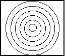
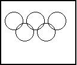

| HOME >> Tutorials >> Tutorial 16: Circles |
Introduction:
Unlike lines, there is no easy way to make a circle without using the command that draws a circle. In this tutorial there will not be many sets of code because there aren't many ways to use a circle without making a picture and using other commands like lines, pixels, and points. This tutorial only has one command:
New Commands:
| Circle( | Draws a circle with the center at (x,y) and a radius |
Circle(X,Y,radius)
The Codes:
There are only going to be two codes this time. The first will show you how to draw circles inside of other circles and the second will draw the Olympics 5-ring symbol.
| : | For AShell, SOS, and TI-Explorer |
| AxesOff | Turns the graph axes off |
| FnOff | Deselects all the Y= functions |
| 0 |
Stores Xmin as 0 |
| 94 |
Stores Xmax as 94 |
| 0 |
Stores Ymax as 0 |
| -62 |
Stores Ymin as -62 |
| ClrDraw | Clears the graph screen of all drawings |
| Circle(47,-31,30 | Draws a circle centered at (47,-31) and radius of 30 |
| Circle(47,-31,5 | Draws a circle centered at (47,-31) and radius of 5 |
| Circle(47,-31,25 | Draws a circle centered at (47,-31) and radius of 25 |
| Circle(47,-31,10 | Draws a circle centered at (47,-31) and radius of 10 |
| Circle(47,-31,20 | Draws a circle centered at (47,-31) and radius of 20 |
| Circle(47,-31,15 | Draws a circle centered at (47,-31) and radius of 15 |
| Pause | Suspends program and waits for user to press |
| ClrDraw | Clears the graph screen of all drawings |
| For(X,5,30,5 | X stored from 5-30 with increments of 5 |
| Circle(47,-31,X | Draws a circle at (47,-31) and radius of X value |
| End | End the For loop |
 press 
As you may have already noticed, this program takes a long time to finish because it draws the circles so slowly, but there's nothing we can do about that. Notice how the same thing is displayed before and after the Pause. You can do it both ways, but in this case, I would prefer to do it the second way because it saves space. Neither way makes the program any faster, but the second way saves the bytes. Next, we'll make the Olympics logo.
| : | For AShell, SOS, and TI-Explorer |
| AxesOff | Turns the graph axes off |
| FnOff | Deselects all the Y= functions |
| 0 |
Stores Xmin as 0 |
| 94 |
Stores Xmax as 94 |
| 0 |
Stores Ymax as 0 |
| -62 |
Stores Ymin as -62 |
| ClrDraw | Clears the graph screen of all drawings |
| Circle(15,-15,12 | Draws a circle centered at (15,-15) and radius of 12 |
| Circle(30,-30,12 | Draws a circle centered at (30,-30) and radius of 12 |
| Circle(45,-15,12 | Draws a circle centered at (45,-15) and radius of 12 |
| Circle(60,-30,12 | Draws a circle centered at (60,-30) and radius of 12 |
| Circle(75,-15,12 | Draws a circle centered at (75,-15) and radius of 12 |

Pretty cool, huh? It actually came out pretty nice. It took a couple of trials and error to get it exactly right (at first I had a radius of 20 and then a radius of 15), but I finally got it.
Conclusion:
I think that should be enough for you to grasp how to use Circle(. I can't really think of any other ways to show you how to use it. I was going to show you how to make a coke can, but I'm leaving that for the tutorial on draw functions. The next tutorial is on shading, which is the final step in making good pictures.
If you do not understand a particular part in this lesson, have suggestions, or find any problems please contact me.
 |
 |
| Tutorial 15 | Tutorial 17 |